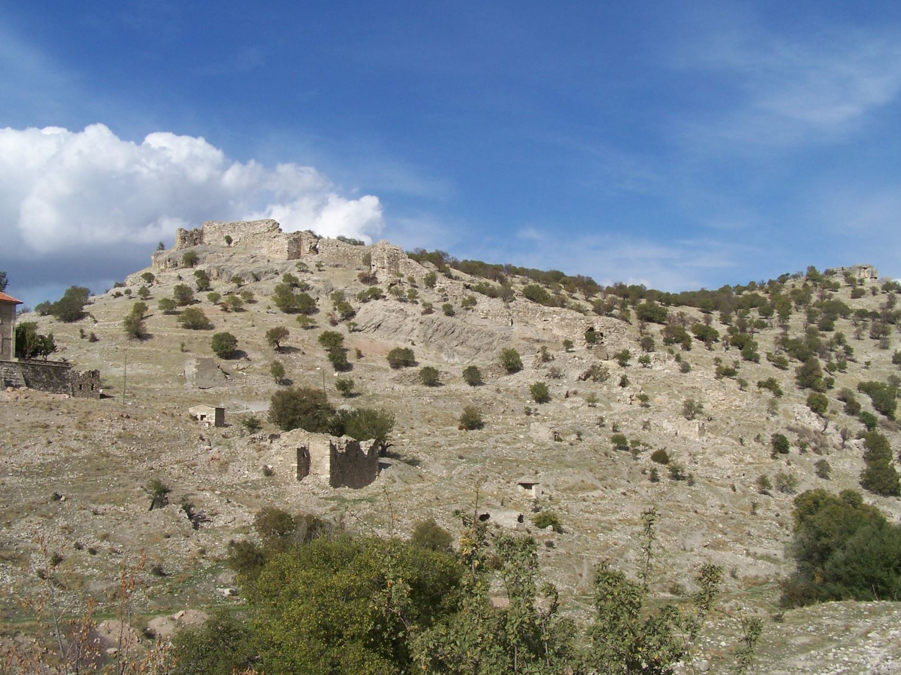
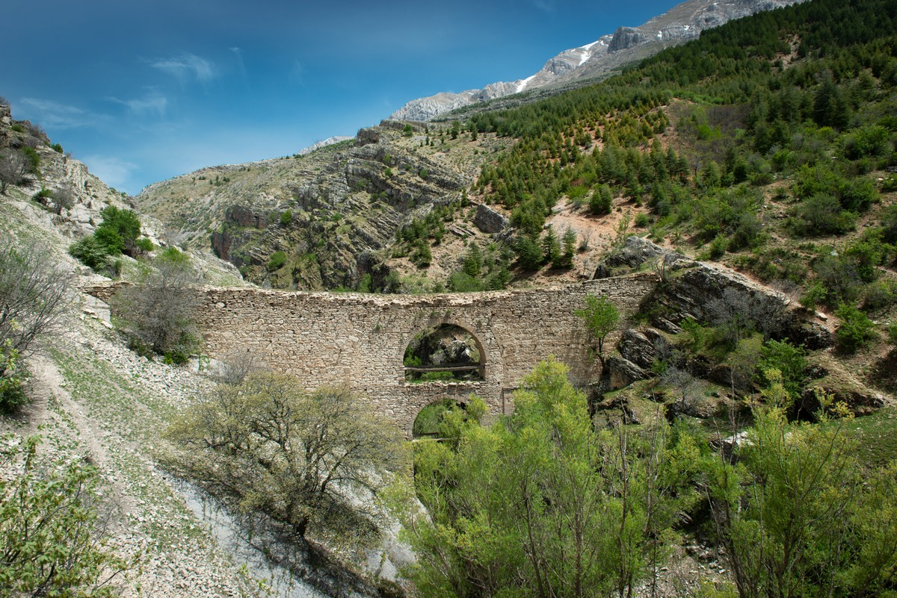
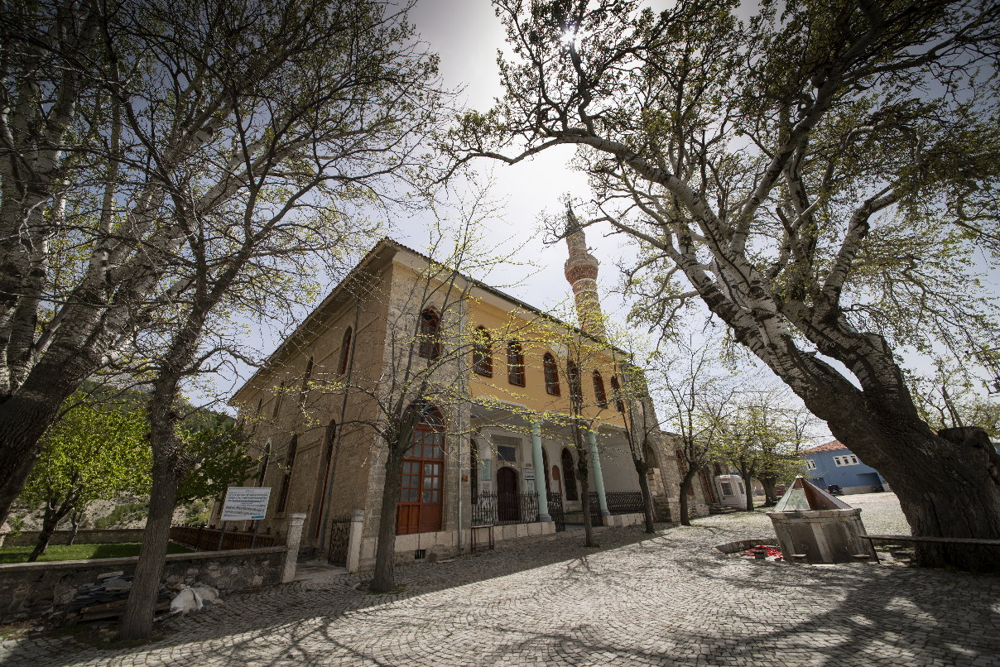
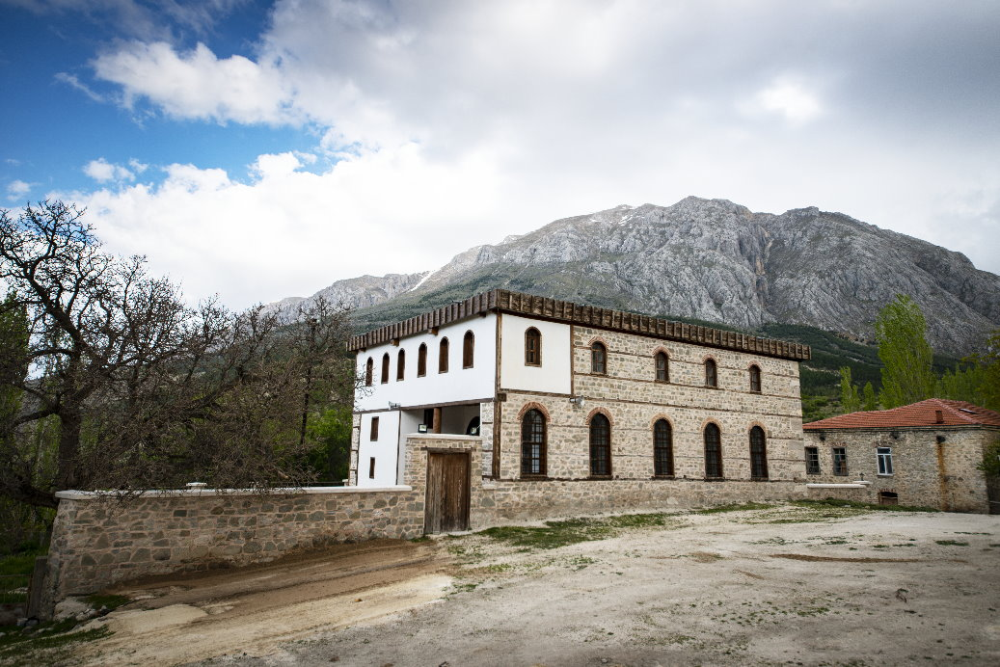
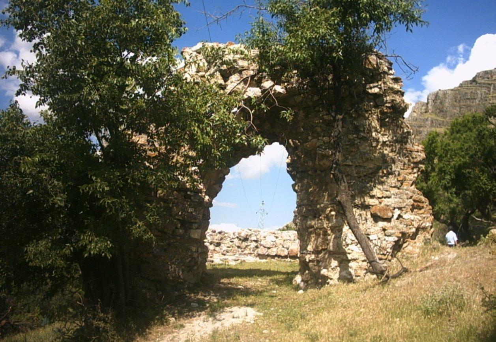

Uluborlu
Kısaca Uluborlu'nun önemi
Uluborlu Tarihi,coğrafik yapısı ve kendine has meyvesiyle gerçekten özel bir yer. Özellikle tarihinden sonra yetiştirdiği Kiraz'ı İngiltere, Almanya, Hollanda , Belçika ve Rusya gibi ülkelerde son derece rağbet görmektedir. Her yıl iki dönemde Uluborlu çok tercih edilir. Birincisi Kirazların çiçek dönemi ,ikincisiyse Kiraz festivali ve güreş etkinliğidir. Bu etkinliğinin ilk günlerinde en iyi kiraz yetiştiricileri seçilir ve ödüller dağıtırlır daha sonrasında Güreş etkinlikleri başlar. Güreş etkinliklerinde Türkiye'nin her bölgesinden tanınmış güreşçiler gelip burda hünerlerini gösterir. Kitabede; M.S.153 yılında Avrilyos Efimmos adındaki bir şahsın güreş düzenlediği belirtilmektedir. Coğrafik yapısı olarakta Kapı Dağ'nın tam olarak eteğine kurulan Uluborlu'nun kirazınında asıl özelliğini veren bu Kapı Dağıdır.
Coğrafya
Isparta'nın bir ilçesi olan Uluborlu Isparta merkeze 65, Antalya'ya ise 180 kilometre mesafededir. Kuzeyinde Dinar, doğusunda Senirkent, güneyinde Atabey, Gönen ve batısında Keçiborlu ilçeleri bulunmaktadır.
İlçeye yerleşim önceleri Toros kollarının uzantısı olan Kapı Dağı'nın eteklerinde kurulmuş, 1950 yılından sonra da şimdiki bulunduğu Uluborlu Ovasına taşınılmıştır. Uluborlu'nun güneydoğusunda 2.463 m rakımlı Kapı Dağı ve bunun uzantısı olan Yuvacça Yaylası bulunmaktadır. Ortalama rakım 1100 m’ dir.
Yazları sıcak ve kurak, kış ayları ise soğuk ve yağışlıdır. 1986-1996 yılları arasındaki verilere göre ortalama sıcaklık 11,6 °C, ortalama nem %59.2, yılın en düşük sıcaklığı –12,1 °C, en yüksek sıcaklığı 34,6 °C’ dir. Ortalama yağış ise 564 mm dir. Yağışlar en çok ilkbahar ayları başında ve Sonbahar aylarında yağmakta olup, ekseriyetle batı ve Güney kesiminden gelmektedir.






Tarihçe
Tarih boyunca antik, askeri ve ticari yolların kavşak noktasında bulunan Uluborlu bölgesi Prehistorik devirlerden itibaren yerleşim yeri ve insanlar için bir cazibe merkezi olmuştur. Tespit edilebilen en eski tarihlere göre bazı kaynaklarda Frigya, bazı kaynaklarda ise Pisidia kenti olarak anlatılmaktadır. MÖ. 334’te Pisidia bölgesi Büyük İskender’in kontrolüne girmiştir. MÖ. 281 tarihinde Makedonya Krallığı’nın Asya kolu olan Selevkos İmparatorluğu' nun yönetimine geçmiştir. MÖ. 183–133 yılları arasında Bergama Krallığı’nın elinde kalmış, onların elinden de MÖ. 130 yılında yine Romalılar tarafından alınarak Kilikia Eyaleti’ne dahil edilmiştir. Daha sonra ise Asia Eyaleti’ne bağlanmıştır. MÖ. 39 yılında Galat Kralı Amyntas’ın hakimiyetine giren bölge MÖ. 25 yılına kadar bu durumda kalmış, daha sonra Galatia Eyaleti’ne katılmıştır. Bölge, Roma İmparatorluğu’nun M.S. 395’te dağılmasıyla Bizans sınırları içinde kalmıştır. Batı Anadolu’da Apollonia adlı bir kentin bulunduğu bilinmesine rağmen buranın neresi olduğu uzun süre meçhul kalmıştı.
Yapılan çalışmalar neticesinde Apollonia’nın Uluborlu olduğu tespit edilmiştir. Yerleşim daha önceki devirlerde Mordiaum ismiyle anılmıştır. MÖ l88-133 yılları arasında Bergama Krallığı'nın elinde bulunan bölge, MÖ l30’da Romalılar tarafından ele geçirilerek, MÖ 102-49 yılları arasında Kilikya Eyaleti içine alınmıştır. Apollonia şehri; daha sonra burada yaşayan Aziz Zozimus’un Antiocheia Valisi Domitian tarafından Konana’ya sürülmesinden sonra bu papazın adına atfen Sozopolis ismiyle anılmaya başlanmıştır.
Apollonia, Roma İmparatorluğu'nun M.S. 395 yılında parçalanmasıyla Doğu Roma İmparatorluğu (Bizans) sınırları içinde kalmıştır. Daha sonra ise Bizans ordusunda paralı askerlik yapan Kuman-Kıpçak Türkleri Uluborlu’ya Selçuklu fetihlerinden önce gelip yerleşmişlerdir. Bunlar Kıpçak Türklerinin on altı boyundan birisi olan ve kendilerinin de mensup oldukları Borlu boyunun ismini şehre vermişlerdir. 1074 tarihinde Uluborlu Selçuklu Türklerinin eline geçmiştir. Bizans imparatoru II. Ioannes Komnenos'un Batı Anadolu’da yoğunlaşan Türkmen kitlelerini geri püskürtmek amacıyla 1119-1120 yılında bölgeye düzenlediği sefer sonrasında Bizans’ın kontrolüne geçmiştir.
II. Kılıç Arslan zamanında, ll76 yılında yapılan Miryakefalon Savaşı ardından Uluborlu ve civarı 1180 yılında kesin olarak Selçuklu egemenliğine girmiştir. 1182 yılında Bizans sınırında bulunan, Kütahya ve Eskişehir’e kadar uzanan Selçuklu uç eyaletinin merkezi Uluborlu olmuştur. Güvenlik açısından oldukça müstahkem bir kale olan Uluborlu, Selçuklu veliahtlarının eğitim aldıkları, meliklik görevlerini yerine getirdikleri bir şehir konumuna gelmiştir. Bu doğrultuda yapılaşma ve teşkilatlanma zaman içerisinde giderek gelişmiş ve Ortaçağ Türk kent yapısı ortaya çıkmıştır. Özellikle Türkiye Selçukluları zamanında yoğun bir Türkmen göçü alan şehir gelişmeye başlamıştır.
Hamitoğulları Beyliği’nin kuruluş sürecinde Dündar Bey önce Uluborlu’yu merkez yaparak kenti çeşitli açılardan imar etti. Uluborlu, 1361 yılında Osmanlı topraklarına katılmıştır. 1403 yılında Timur tarafından ele geçirildi. Ceza olarak şehirdeki erkekleri tamama öldürüldü, kadın ve çocuklarda esir edildi. Bundan sonra kalesi toprak seviyesine kadar yıkıldı. Uluborlu, Osmanlı döneminde 15. ve 16. yüzyıllarda yapılan tahrirlerden anlaşıldığına göre; Anadolu Eyaleti’ne bağlı Hamid Sancağı’nın bir kazasıdır. Uluborlu 1831’de yapılan ilk nüfus sayımı sırasında Hamid Sancağı’na bağlıdır. 1911 yılı Uluborlu şehrinin kaderini belirleyecek bir dönüm noktası olmuş, o yıl çıkan büyük yangından sonra şehrin, Musluk yöresine indirilmesi görüşü ağır basmaya başlamıştır. Ancak bu, cumhuriyet döneminde gerçekleştirilebilmiştir. 1935 yılında belediye tarafından verilen karar hemen uygulanmış ve yeni şehir kurulmaya başlanmıştır.
Milli mücadelenin başladığı yıllarda Hafız İbrahim Demiralay’ın talimatıyla Uluborlu’da, Kaymakam Said Bey’in başkanlığında "Uluborlu Anadolu ve Rumeli Müdafaa-i Hukuk Cemiyeti" kurulmuştur. Uluborlu, Türkiye için rekor teşkil edecek şekilde 220 yedek subayla I. Dünya Savaşı'na ve Türk Kurtuluş Savaşı'na katılmıştır. 242 İstiklal madalyası ile Uluborlu, Türkiye’de en çok İstiklal Madalyasına sahip olan ilçedir. .1924 yılı öncesinde Uluborlu Hamit sancağına ve Konya vilayetine bağlı bir ilçedir. Bu tarih itibarıyla sadece Isparta vilayetine bağlı ilçe olmuştur. 1963'te de belediye kurulmuştur.
Ekonomik yapı
Bitkisel Üretim: Halkın gelir kaynaklarının başında sulu tarım gelmektedir. 1977 yılında Uluborlu Barajının inşasından sonra meyve üreticiliği modern yöntemlerle yapılarak büyük gelişme göstermiştir. Genellikle elma, kiraz, ayva, armut gibi meyveler yetiştirilmektedir. Uluborlu İlçesinde kiraz üretimi meyvecilik alanında önemli yer tutmaktadır. Uluborlunun yüksek yerlerden görünümü orman içinde bir yerleşim yeri gibidir ancak bu orman kiraz ve elma ağacı ormanıdır. 30-35 yıl önce üretimine başlanan Uluborlu kirazının önemli bir kısmı İngiltere, Almanya, Hollanda ve Belçika gibi Avrupa ülkelerine ihraç edilmektedir. İlçede 17 tür kiraz yetişmektedir. Uluborlu kirazının başlıca özelliği dayanıklılığı, kalitesi ve kendisine has lezzetidir. Ancak bu dayanıklı ve lezzetli meyveler yurt içinde satılamamakta, üst düzey kalitesi ve fiyatıyla tamamen yurt dışı pazarlara ihraç edilmektedir. Haziran ayının son haftasında, kiraz hasatıyla birlikte kent nüfusuna geçici tarım işçileri ve Uluborlu Kiraz festivali ile birlikte yapılan tarihi 500 yılı geçkin geleneksel yağlı güreşleri izlemeye gelen turistler eklenmektedir.